Leads are scattered.
Website forms, DMs, email, spreadsheets, notes, calendars, and different inboxes all hold pieces of the customer journey.
I build hand-coded websites and funnel systems that do more than look professional. They help capture leads, organize inquiries, book appointments, trigger follow-ups, connect your tools, and move customers toward the next step.
No bloated all-in-one platform just because everyone else uses one. We map what your business actually needs, then build the system around that.
Free 20-minute AZFlow System Mapping · No commitment required
I keep the number of active builds limited so I can stay directly involved in the strategy, development, integrations, testing, and launch.
A potential customer fills out a form. Someone has to notice it. Someone has to copy the information somewhere. Someone has to reply. Someone has to send the booking link. Someone has to update the calendar. Someone has to remember to follow up.
Website forms, DMs, email, spreadsheets, notes, calendars, and different inboxes all hold pieces of the customer journey.
A busy day is enough for a promising inquiry to sit unanswered or for a follow-up to happen later than it should.
Instead of reducing work, scheduling can create another chain of confirmations, reminders, calendar updates, reschedules, and no-show follow-ups.
The page collects the click or inquiry—but the important work that happens afterward is still being handled manually.
The problem is that the pieces you already have often don't work together as one clear customer journey.
Most businesses don't start with a system. They add tools one at a time.
A website here. A form there. A spreadsheet for leads. A calendar for appointments. An inbox for follow-ups. Maybe a CRM that nobody really wants to open.
Each tool may work on its own. But your team still has to move information between them, remember what happens next, and keep the entire process together manually.
The real issue is not the lack of another tool. It's the lack of a connected system behind the tools.
The more your business grows, the harder this becomes to manage consistently.
Different leads need different next steps. The system should help handle those steps without making your team manually rebuild the process every time.
Visitor discovers your business.
They request information, a guide, quote, or resource.
Their details are stored in the CRM or lead database.
Relevant follow-up emails are triggered automatically.
They can return when they're ready to book, inquire, or buy.
Visitor chooses to book, request a quote, or start.
Their information is captured and organized.
Booking or qualification happens through the appropriate workflow.
Confirmations, reminders, and calendar actions happen automatically where appropriate.
Their status moves through the pipeline so the business knows what needs attention next.
Your business may not need every feature below. The point is to determine which pieces actually support the journey you need.
A customer-facing experience built around your audience, offer, message, and desired action.
Collect useful information and route different leads toward the right next step.
Record leads, organize details, track status, source, ownership, and interaction history.
Automate acknowledgments, confirmations, reminders, follow-ups, no-show messages, nurture, and onboarding.
Move qualified prospects toward appointments and give the business a clearer view of what needs attention.
Databases, APIs, business logic, dashboards, existing tools, analytics, and conversion tracking.
Drag-and-drop platforms can be useful. But when the business needs something more specific, the system often ends up being shaped around what the platform allows instead of what the workflow actually needs.
My approach starts with the customer journey and the business process first.
Then I build the website, funnel, backend, integrations, and automations around that process.
It means having more control over what gets built, how the pieces connect, and what your business actually needs to maintain.
I didn't start out in tech. I started out as a nurse, running public health programs and fixing broken systems inside actual clinics, patient logs that didn't match, appointments that fell through, follow-ups that never happened.
When I moved into funnel and web design, I noticed similar problems online. So I taught myself to create custom-coded experiences built around how people make decisions and what they need before taking the next step.
My background is in healthcare operations, where clear information and reliable workflows matter. I now bring that same systems thinking to funnels by connecting strategy, design, code, lead tracking, booking, and follow-up into one smooth customer journey.
You don't need to arrive knowing whether you need a CRM, webhook, database, automation, API, or custom backend. Tell me what's happening in the business and where the process is breaking.
We can map how leads enter the business, where their information should go, who needs to know about them, and what follow-up should happen next.
We can create a clearer booking journey with qualification, scheduling, confirmations, reminders, calendar actions, and appropriate follow-up.
We can improve or rebuild the customer-facing experience around a stronger journey instead of treating the website as a digital brochure.
Existing tools can often stay. The goal is to determine what should connect, what should remain manual, and where custom development can remove unnecessary steps.
If the project needs business logic, user roles, dashboards, databases, internal workflows, or custom interfaces, I can build beyond the front-end.
I can turn approved visual designs into responsive, hand-coded pages and connect the front-end to the backend functionality the project requires.
Your project scope is mapped before development. That keeps the build focused instead of forcing your business into a giant package full of features you may never use.
Customer journey, conversion points, manual steps, system requirements, and workflow planning.
Responsive pages built around the agreed message, offer, customer journey, and desired action.
Forms, lead records, statuses, qualification, ownership, and organized customer information.
Scheduling workflows, confirmations, reminders, calendar synchronization, and rescheduling logic where required.
Appropriate acknowledgments, reminders, nurture, no-show, follow-up, or onboarding sequences.
APIs, webhooks, databases, custom logic, dashboards, and connections to supported existing tools.
Measurement for the important actions in the customer journey where technically appropriate.
Workflow testing, launch checks, documentation, credentials handover, and practical system guidance.
A simple landing page and a connected business system are not the same project. Pricing depends on what needs to be designed, developed, integrated, automated, tested, and handed over.
For businesses with one clear offer that need a focused page to turn visitors into leads or inquiries.
For businesses that need more than a landing page, with booking and connected lead automation.
For businesses that need a more advanced funnel, multi-page website, or connected business automation system.
Prices shown are starting prices. Final pricing depends on project scope, number of pages, integrations, automation requirements, and complexity. Third-party subscriptions, domain, hosting, paid advertising, and ongoing maintenance are not included unless specified in the project quote. International prices are fixed package prices and are not live currency conversions.
The project begins with your existing process—not with assumptions about which software or features you should buy.
We identify how customers currently find you, inquire, book, buy, follow up, and move through the business.
We identify repetitive work, unnecessary steps, disconnected tools, bottlenecks, and places where information can fall through the cracks.
I define the pages, data, integrations, workflows, automation logic, and backend requirements for the approved system.
I develop the system, connect the required pieces, and test the important customer and business workflows before launch.
We launch the approved build and complete the agreed turnover so you understand what you own, what you manage, and how the system works.
Depending on the project, I can work with custom code, existing business tools, APIs, automation platforms, databases, analytics, hosting services, and other integrations.
The objective is not to use the largest possible tech stack. It's to create a reliable stack that supports the workflow without unnecessary complexity.
Different projects require different levels of development. Some focus on the customer-facing experience. Others involve workflows, backend logic, data, or operational systems behind the interface.
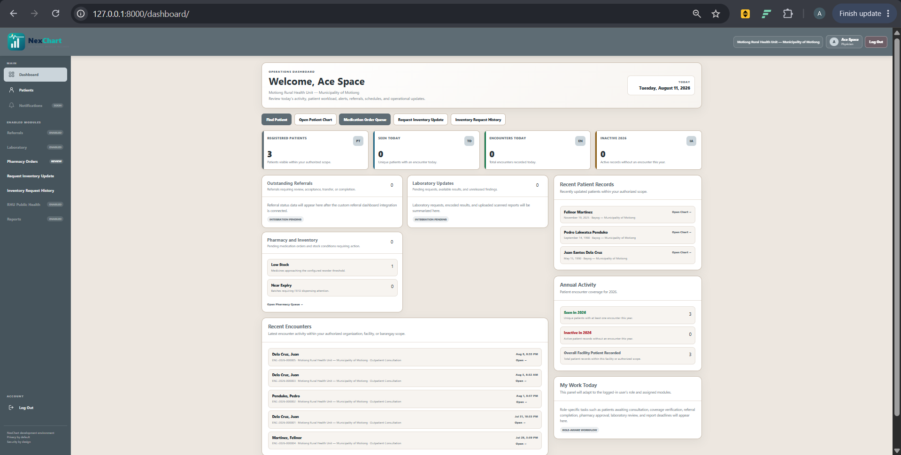
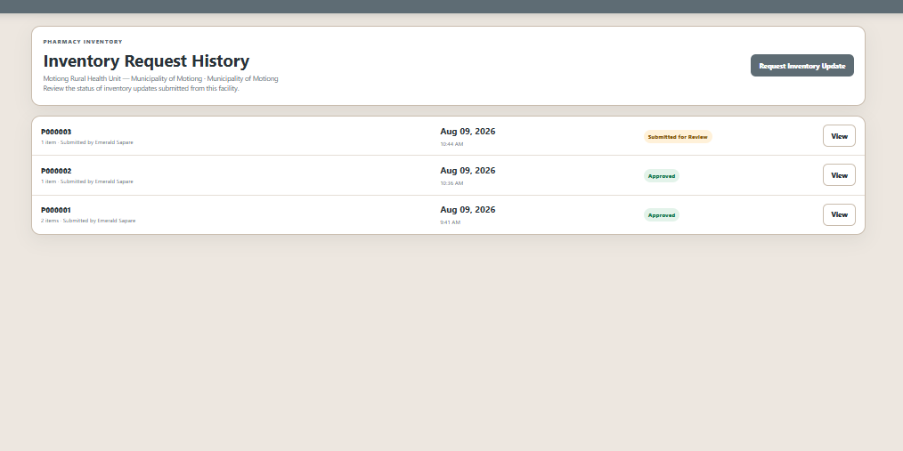
Problem: Healthcare teams often rely on disconnected records and workflows that create delays, missed information, and unnecessary manual work.
What I built: A configurable healthcare operations platform covering patient records, clinical workflows, referrals, pharmacy processes, reporting, and facility-level controls.
Built to support: Clearer workflows, more organized records, and a system that can adapt to different healthcare facilities instead of forcing one fixed process.
Personal SaaS project: NexChart is my independently conceived and developed healthcare operations platform. I am building it as my own software product based on problems I have experienced across different healthcare settings.
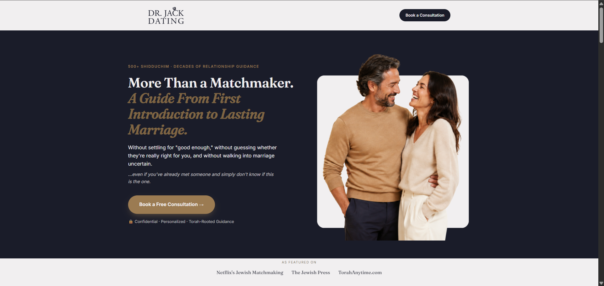
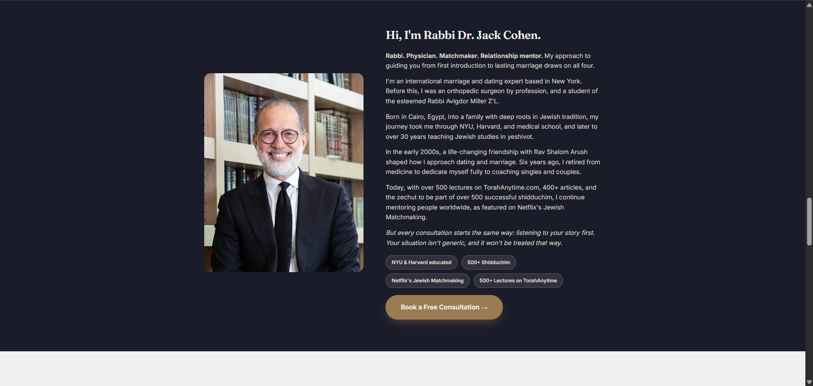
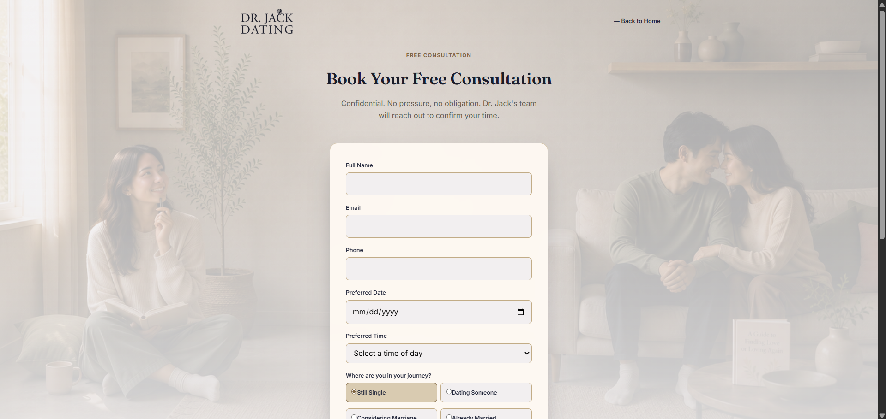
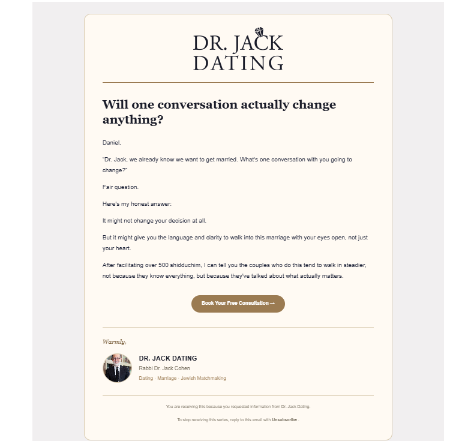
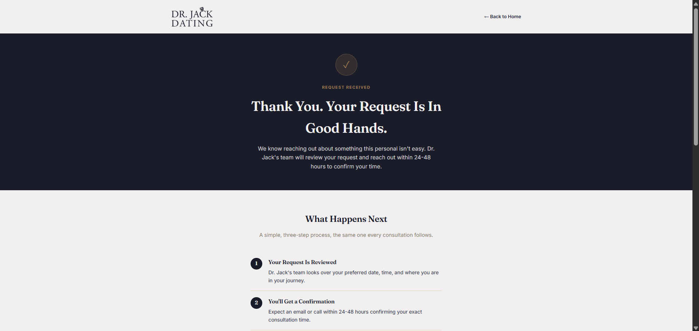
Problem: A professional service business needs more than an attractive website when visitors arrive with different levels of readiness and different reasons for seeking help.
What I built: A customer-facing funnel experience designed around dating coaching, matchmaking, marriage coaching, educational content, trust-building, consultation booking, and follow-up.
Built to support: A clearer path from discovering Dr. Jack's expertise to understanding the available support and taking the next appropriate action.
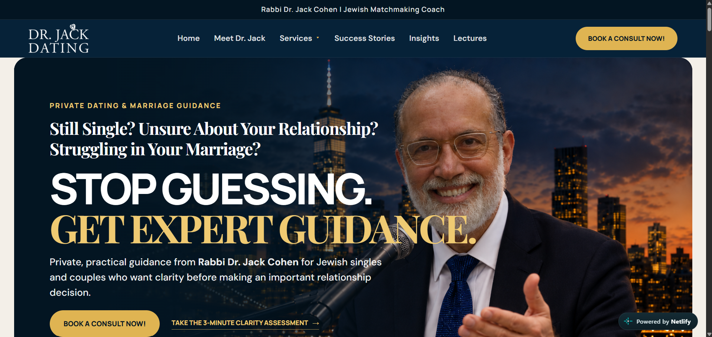
Problem: A relationship guidance business serving Jewish singles and couples needs more than a brochure website. Visitors may arrive for dating guidance, matchmaking, marriage support, educational content, or a private consultation, so the website needs to guide each person toward the right next step.
What I built: A multi-page hybrid website and funnel system that brings together service pages, trust-building content, a clarity assessment, lead capture, consultation booking, and customer journey paths in one branded experience.
System features: Booking and calendar flow, CRM lead organization, payment-ready service paths, automated follow-up, forms, and responsive design across desktop, tablet, and mobile.
Problem: High-consideration home services need to turn interest into useful lead information without overwhelming the visitor.
What I built: A conversion-focused solar experience designed to communicate the offer clearly and guide potential customers toward the next step.
Built to support: Lead generation, qualification, clearer customer intent, and a smoother path toward a solar consultation or quote.
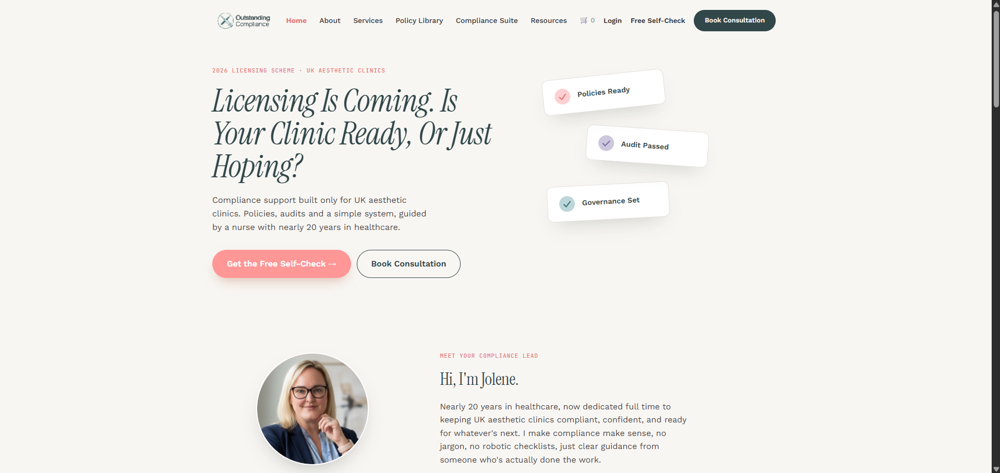
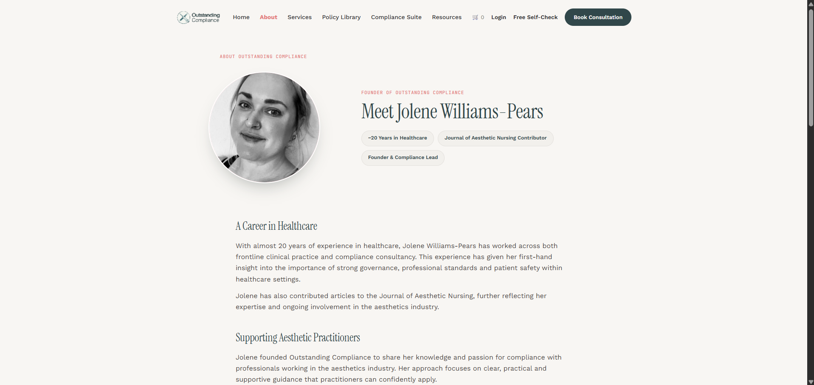
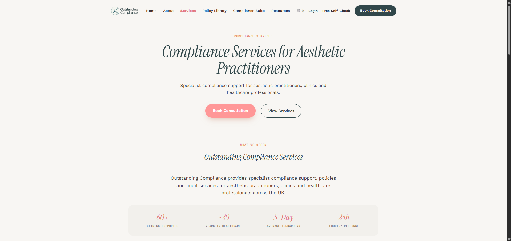
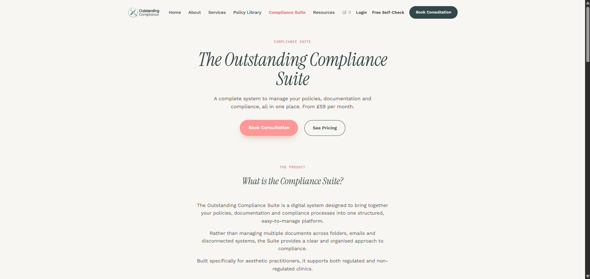
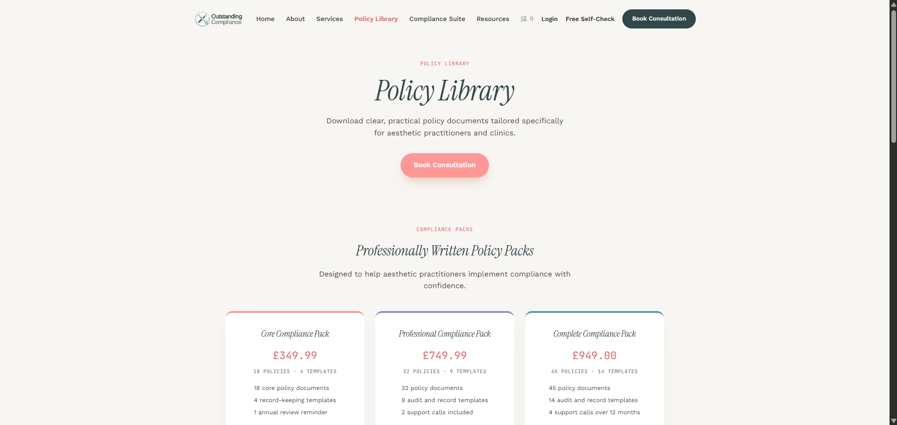
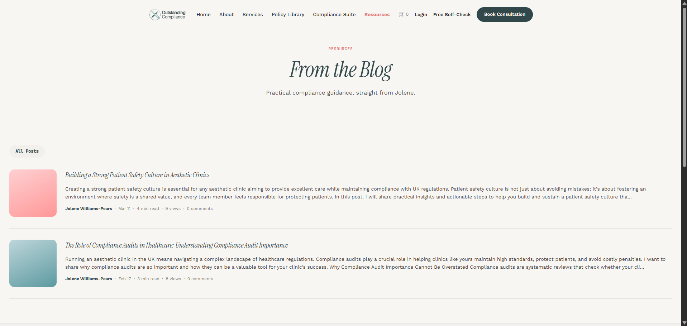
Problem: Professional compliance services can become difficult to navigate when the offer includes multiple services, resources, policies, and business requirements.
What I built: A structured website experience organizing the company's services, compliance suite, policy resources, and supporting information into a clearer customer journey.
Built to support: Professional positioning, easier navigation, clearer service discovery, and stronger paths toward inquiry.
You don't need to know the technical answer before reaching out. These are some of the questions business owners commonly have before starting.
Maybe your website looks good but doesn't generate enough action. Maybe inquiries arrive, but everything afterward is manual. Maybe leads are scattered across email, spreadsheets, DMs, and calendars. Maybe bookings still require too much back-and-forth.
You don't have to know the technical solution yet. Start with the business problem.
Tell me what happens when someone finds you, what you want them to do, what currently happens after they take action, what your team still does manually, what tools you already use, and where leads or tasks are getting stuck.
I intentionally keep my active project queue small so I can stay directly involved from system mapping through testing and launch. If your project is a good fit and you're ready to move forward, it can receive priority consideration for the next available opening.
Free 20-minute System Mapping · No commitment required
I Don't Just Build the Page Your Customers See. I Build What Happens After They Click.